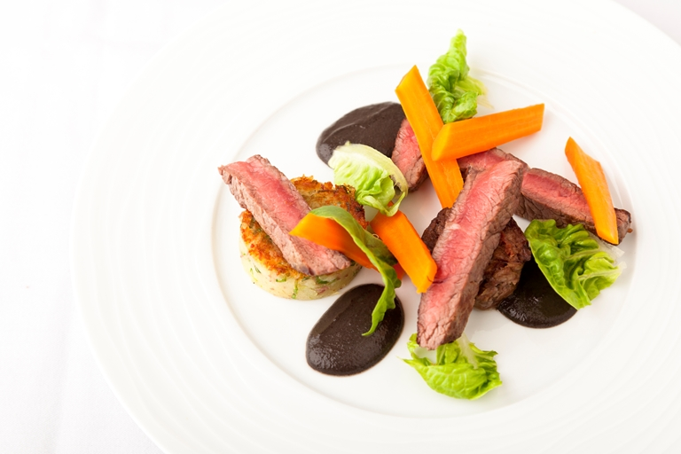

Rounded corners!
This beef steak recipe from Kevin Mangeolles delivers an elegant main course, as the beef is paired with mushroom purée and potatoes cooked with bacon. The inventive beef tea brings further beefy richness to this dish, flavoured with dried ceps and thyme. Creating this dish requires a good amount of planning and preparation, so it's a good idea to prepare some of the elements, such as the potatoes and the beef tea, ahead of time. The finished meal will be incredible and worth the effort.
>